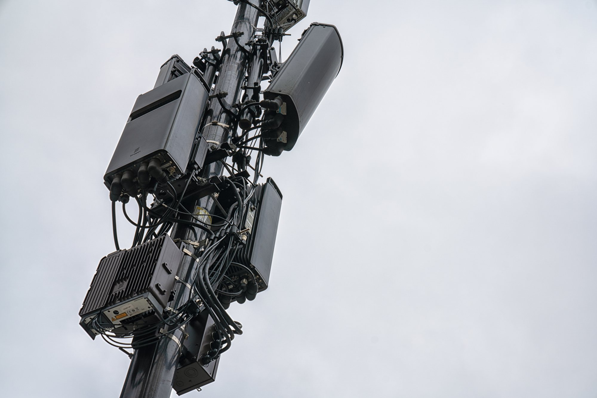
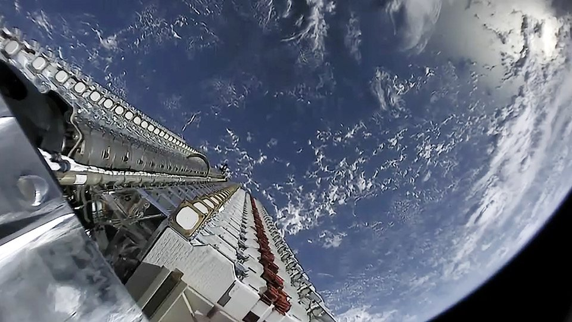
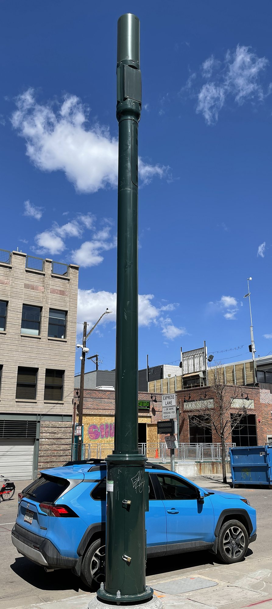

Il 4 novembre 2026 Qualcomm Technologies annuncia che SpaceX ha selezionato le piattaforme Dragonwing per la rete 5G terrestre nazionale di Starlink Mobile. Non è un’altra voce su frequenze o clienti: è la scelta dei chip e delle radio che dovranno equipaggiare le stazioni base americane. L’accordo pluriennale prevede il dispiegamento di decine di migliaia di siti a partire dal 2027 e completa, sul piano hardware, il mosaico che SpaceX sta costruendo per entrare da protagonista nella telefonia mobile degli Stati Uniti.
Che cosa ha annunciato Qualcomm
Il comunicato è chiaro: SpaceX ha scelto le piattaforme Dragonwing Cellular Infrastructure di Qualcomm, in particolare le unità radio QRU100 e le unità digitali QDU100, insieme al software Layer 1 di grado commerciale. L’obiettivo dichiarato è accelerare la costruzione della rete 5G terrestre nazionale di Starlink Mobile, pensata per lavorare insieme alla costellazione satellitare e tenere i telefoni connessi ovunque ci sia copertura.
Qualcomm presenta l’intesa come la più grande iniziativa 5G della propria storia. Non pubblica cifre, né un calendario sito per sito: parla di un accordo pluriennale e di un ramp-up rapido una volta avviato il dispiegamento. Durga Malladi, executive vice president di Qualcomm, firma la frase ufficiale: «Insieme a SpaceX stiamo costruendo infrastrutture cellulari di livello mondiale negli Stati Uniti, avanzando il 5G di oggi, con l’opportunità di gettare le basi per un 6G nativo per l’intelligenza artificiale negli anni a venire.»
Starlink, lo stesso giorno, conferma il pezzo satellitare e terrestre in un unico messaggio: Starlink Mobile sta costruendo «la prima rete nazionale americana pienamente integrata, satellitare e terrestre», e le stazioni base 5G useranno chip Qualcomm per accelerare il dispiegamento a partire dal 2027. Michael Nicolls, figura tecnica di riferimento di Starlink, scrive di essere entusiasta di costruire Starlink Mobile con Qualcomm. Elon Musk rilancia il post di Starlink e aggiunge: «Finalmente ci sarà una rete con buon segnale ovunque.»
QRU100, QDU100 e la divisione del lavoro
Sul piano tecnico l’accordo disegna una divisione netta. Qualcomm fornisce le piattaforme radio e digitali Dragonwing e il software di Layer 1, cioè lo strato fisico e di elaborazione del segnale. SpaceX costruisce i «box» delle stazioni base e scrive il software di Layer 2, Layer 3 e oltre: protocolli, gestione della rete, integrazione con i satelliti. Malladi lo ha detto ai giornalisti senza ambiguità: «Noi non costruiamo i box.»
Le radio sono Massive MIMO a 64 percorsi in trasmissione e 64 in ricezione (64T64R). È una configurazione pensata per aumentare copertura, capacità ed efficienza spettrale rispetto alle antenne tradizionali. Il dettaglio che Qualcomm sottolinea come unico è la frequenza: di solito il Massive MIMO 64T64R vive nelle bande dai 3,5 GHz in su. Per SpaceX, Qualcomm lo ha portato «fino a 2 GHz», cioè nelle bande medie più basse dove Starlink Mobile sta concentrando lo spettro terrestre. Malladi: «Abbiamo portato radio Massive MIMO 64T64R nelle bande più basse, fino a 2 GHz: questo è davvero un aspetto unico.»
Altro punto decisivo: non sono piccole celle da tetto. Malladi ha precisato a Fierce Network che si tratta di macro celle, cioè siti ad alta potenza tipici delle reti nazionali tradizionali. Axios nota che il segnale industriale va in quella direzione: infrastruttura macro ad alta potenza più che sole piccole celle sui tetti delle case abbonate a Starlink, ipotesi che Musk aveva ventilato nelle settimane precedenti come primo passo complementare.

Ibrido: satelliti e terra sullo stesso telefono
Qualcomm e Starlink ripetono lo stesso schema: la rete terrestre non sostituisce i satelliti, li completa. L’idea è un servizio continuo sul telefono di tutti i giorni, senza terminale dedicato: dove arriva la torre si usa la radio terrestre; dove la torre non c’è, o non basta, interviene la costellazione. È la stessa architettura ibrida che SpaceX ha messo al centro degli annunci sullo spettro a 800 MHz e sulle licenze mid-band.
In questa chiave l’accordo Qualcomm è il pezzo «radio a terra» del disegno. Lo spettro da solo non fa un operatore; servono chip, software, siti, torri e clienti. Con Dragonwing SpaceX dichiara di avere scelto il fornitore delle piattaforme per accelerare quel tratto di strada a partire dal 2027, in parallelo con il dispiegamento dei satelliti Gen2 dedicati a Starlink Mobile.

Come si colloca rispetto allo spettro e a Boost
Nelle settimane scorse SpaceX ha messo in fila lo spettro: circa 65 MHz mid-band / AWS-4 da EchoStar e, subordinato all’approvazione FCC, fino a 14 MHz a 800 MHz da Grain Management. A inizio settimana sono emerse trattative con EchoStar su Boost Mobile, cioè clienti e struttura commerciale. L’accordo Qualcomm non chiude quelle partite: non annuncia torri, non annuncia Boost, non pubblica un prezzo. Dice però qualcosa di concreto sull’hardware: decine di migliaia di macro siti, chip Dragonwing, partenza dal 2027.
L’analista Joe Madden di Mobile Experts stima in almeno 100 miliardi di dollari il costo complessivo di una rete satellitare più terrestre americana che includa anche lo spettro. È una stima di settore, non una cifra di SpaceX o Qualcomm. Per questa pagina resta il fatto verificabile: il fornitore delle piattaforme 5G terrestri è stato scelto, il valore dell’intesa no.
Sul piano economico di SpaceX, Starlink continua a pesare: nei resoconti sul terzo trimestre rappresenta circa il 36 per cento del fatturato e circa l’85 per cento del utile operativo. Costruire una rete mobile nazionale è un salto di scala diverso dai terminali residenziali, e proprio per questo l’annuncio Qualcomm è letto come segnale di esecuzione, non solo di ambizione.

Cosa cambia, e cosa resta aperto
Cambia il livello di concretezza della metà terrestre. Fino a ieri Starlink Mobile aveva frequenze in portafoglio o in corso di trasferimento, satelliti autorizzati e voci su clienti e torri. Da ieri ha anche un fornitore dichiarato per le piattaforme delle stazioni base, un anno di partenza (2027) e una scala (decine di migliaia di siti macro). Qualcomm, dal canto suo, lega il proprio nome al progetto 5G più grande della propria storia recente e lascia aperta la porta al 6G «AI-native» negli anni successivi.
Restano fuori dall’annuncio tre pezzi. Il primo è il valore in dollari dell’accordo. Il secondo sono i landlord delle torri: Crown Castle, American Tower, Vertical Bridge o altri non compaiono nel comunicato. Il terzo è lo stato delle trattative Boost / EchoStar e dei trasferimenti FCC sullo spettro Grain. Senza torri e senza via libera regolatorio sullo spettro, le radio Dragonwing restano hardware in cerca di siti e di frequenze operative.
| Data | Fase | Che cosa succede |
|---|---|---|
| 6 ottobre 2026 | FCC satelliti | Autorizzati fino a 15.000 satelliti Gen2 Starlink Mobile |
| 8 ottobre 2026 | Spettro Grain | Accordo sullo spettro nazionale a 800 MHz; manca l’ok FCC |
| fine ottobre | Torri | Resoconti su trattative per decine di migliaia di siti |
| 2–3 novembre | Boost / EchoStar | Voci su trattative commerciali; nessun accordo annunciato |
| 4 novembre 2026 | Qualcomm | Scelte le piattaforme Dragonwing; dispiegamento dal 2027 |
Che cosa aspettarsi adesso
I segnali da seguire sono quattro. Il primo è qualsiasi dettaglio aggiuntivo su densità dei siti, bande precise e piano di copertura indoor che SpaceX o Qualcomm possano aggiungere dopo l’annuncio. Il secondo sono gli accordi con i proprietari delle torri, senza i quali le macro celle restano sulla carta. Il terzo è l’istruttoria FCC sui trasferimenti di spettro ancora aperti. Il quarto è l’esito, o il silenzio, sulle trattative Boost. In parallelo resta il ritmo di produzione e lancio dei satelliti Gen2 Mobile, già autorizzati e legati al calendario Starship.
Per chi legge dall’Italia e dall’Europa il messaggio è indiretto ma nitido. Starlink Mobile negli Stati Uniti sta passando dalla raccolta di diritti radio alla costruzione fisica della rete. Altrove continuerà a passare da accordi locali. Se l’esperimento americano funzionasse, cambierebbe lo standard di che cosa può essere un operatore ibrido satellitare e terrestre.
Il dossier sulle trattative Boost / EchoStar passa all’archivio Notizie: questa pagina mette in primo piano la scelta di Qualcomm e l’avvio, dal 2027, della rete 5G terrestre di Starlink Mobile.
Fonti pubbliche e tracce
Ultimo aggiornamento editoriale: 5 novembre 2026. Nel corpo non si ripete la fonte a ogni frase: le tracce sono raccolte qui. Le citazioni in inglese sono tradotte in italiano. Il valore dell’accordo non è stato divulgato.
- BusinessWire / Qualcomm, 4 novembre 2026: SpaceX seleziona Dragonwing QRU100 e QDU100 più software Layer 1; rete 5G terrestre nazionale; dispiegamento di decine di migliaia di siti dal 2027; citazione di Malladi.
- Starlink su X, 4 novembre 2026: rete nazionale integrata satellitare e terrestre; stazioni base 5G con chip Qualcomm a partire dal 2027.
- Qualcomm su X, 4 novembre 2026: annuncio pubblico e grafica ufficiale dell’accordo.
- Elon Musk su X, 4 novembre 2026: «At last there will be one network with good signal everywhere!»; rilancio del post Starlink. Michael Nicolls: «Excited to build Starlink Mobile with @Qualcomm!».
- Fierce Network, 4 novembre 2026: Malladi conferma macro celle (non small cells), ramp-up rapido, Massive MIMO 64T64R portato fino a 2 GHz; Qualcomm fornisce Layer 1 / componenti, SpaceX costruisce i box e il software superiore.
- CNBC, Axios, Teslarati, 4 novembre 2026: accordo presentato come la più grande iniziativa 5G di Qualcomm; stima Madden (≥100 miliardi per sat+terrestre incluso spettro); lettura Axios su infrastruttura macro ad alta potenza; peso di Starlink sui conti SpaceX del terzo trimestre.
- Rivoluzione Spaziale, 4 novembre 2026: dossier sulle trattative Boost / EchoStar (contesto commerciale, non oggetto di questo annuncio).
- Rivoluzione Spaziale, 9 ottobre 2026: dossier sull’acquisto dello spettro a 800 MHz da Grain Management.
Fotografie utilizzabili
La copertina è la grafica ufficiale Qualcomm dell’annuncio del 4 novembre, usata con credito Qualcomm e dicitura «uso editoriale non commerciale». Le altre tre immagini sono a licenza libera da Wikimedia Commons: antenne 5G in CC BY 2.0, stack Starlink in CC0, torre 5G in CC BY 4.0. Dettagli in scheda dei crediti fotografici.
Apri il dossier Boost / EchoStar archiviato · Archivio Notizie · Torna a SpaceX